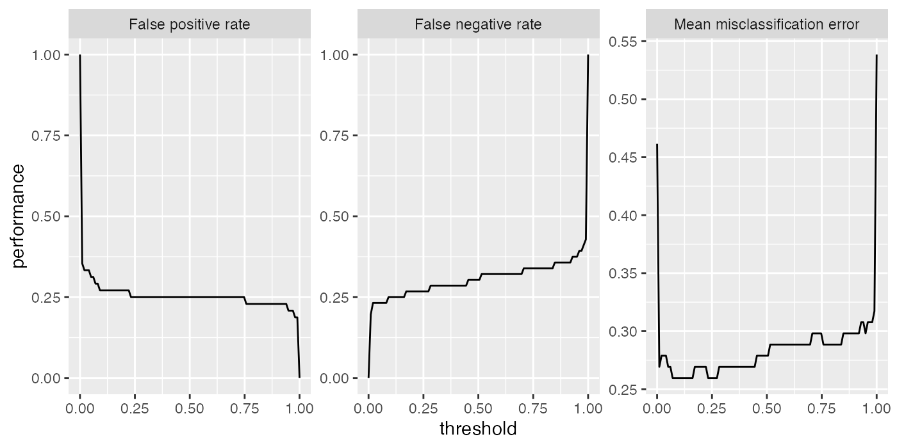
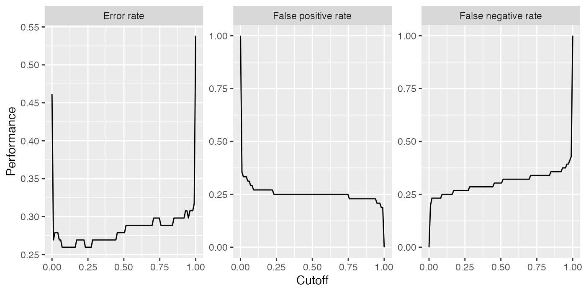
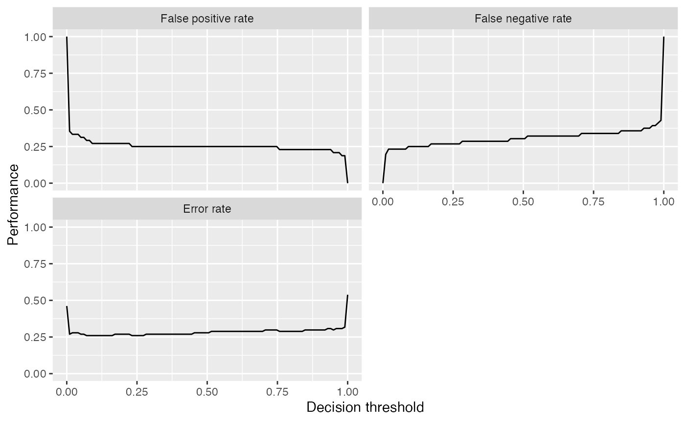
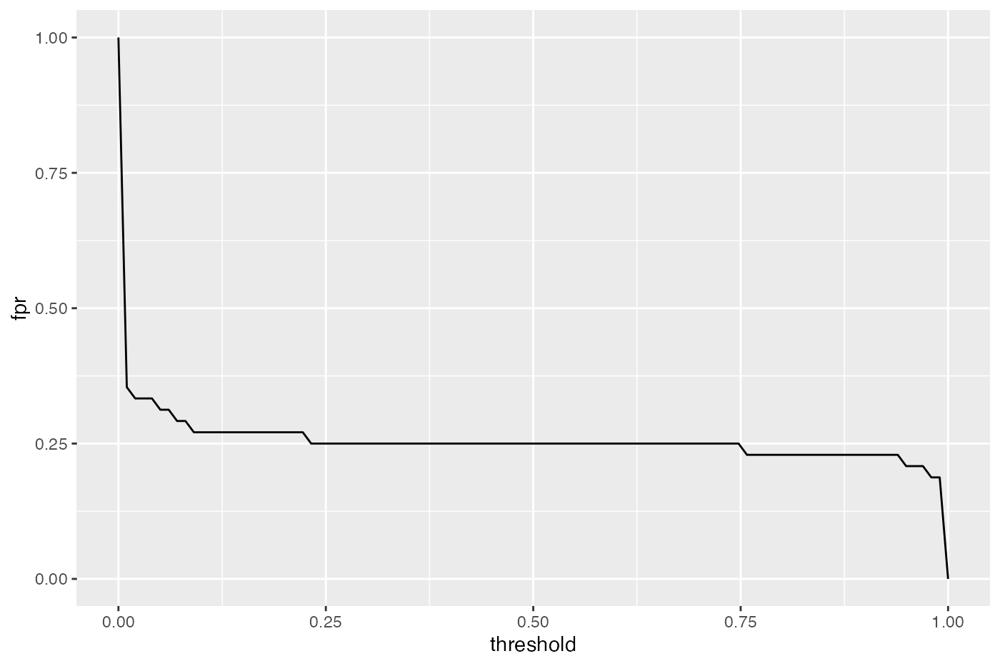
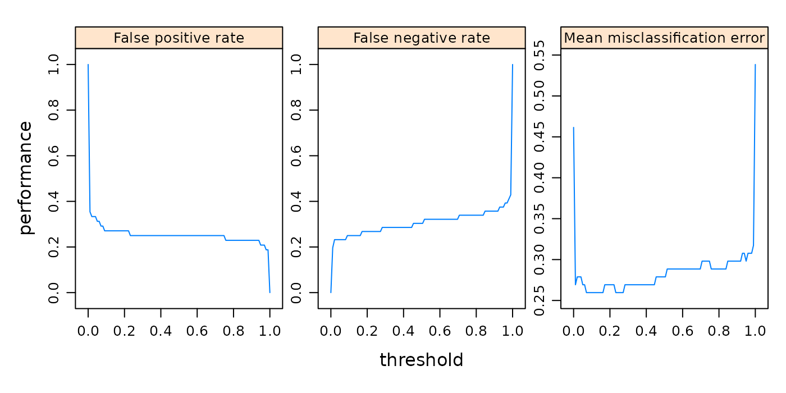
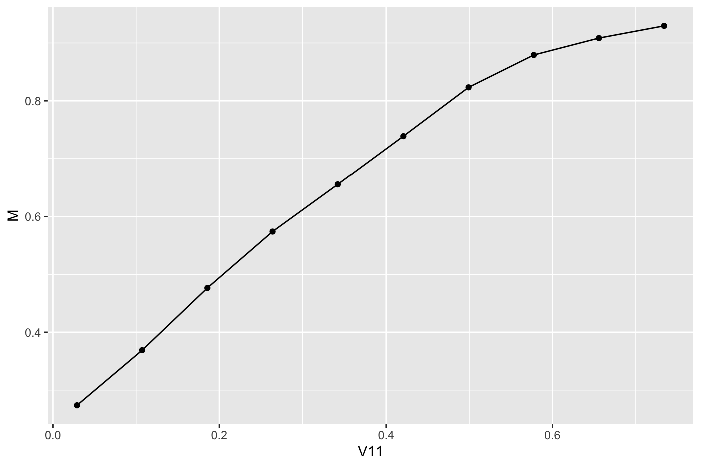
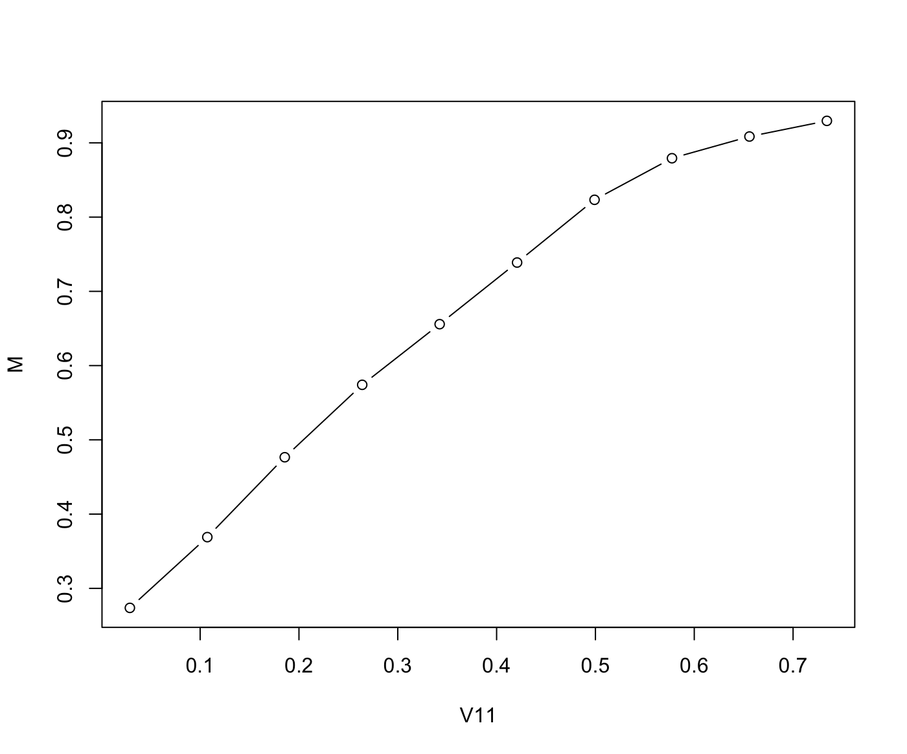

Generation and plotting functions
mlr’s visualization capabilities rely on generation functions which generate data for plots, and plotting functions which plot this output using either ggplot2::ggplot2() or ggvis::ggvis() (the latter being currently experimental).
This separation allows users to easily make custom visualizations by taking advantage of the generation functions. The only data transformation that is handled inside plotting functions is reshaping. The reshaped data is also accessible by calling the plotting functions and then extracting the data from the ggplot2::ggplot() object.
The functions are named accordingly.
- Names of generation functions start with
generateand are followed by a title-case description of theirFunctionPurpose, followed byData, i.e.,generateFunctionPurposeData. These functions output objects of classFunctionPurposeData. - Plotting functions are prefixed by
plotfollowed by their purpose, i.e.,plotFunctionPurpose. -
ggvis::ggvis()plotting functions have an additional suffixGGVIS, i.e.,plotFunctionPurposeGGVIS.
Some examples
In the example below we create a plot of classifier performance as function of the decision threshold for the binary classification problem sonar.task. The generation function generateThreshVsPerfData() creates an object of class ThreshVsPerfData which contains the data for the plot in slot $data.
lrn = makeLearner("classif.lda", predict.type = "prob")
n = getTaskSize(sonar.task)
mod = train(lrn, task = sonar.task, subset = seq(1, n, by = 2))
pred = predict(mod, task = sonar.task, subset = seq(2, n, by = 2))
d = generateThreshVsPerfData(pred, measures = list(fpr, fnr, mmce))
class(d)
## [1] "ThreshVsPerfData"
head(d$data)
## fpr fnr mmce threshold
## 1 1.0000000 0.0000000 0.4615385 0.00000000
## 2 0.3541667 0.1964286 0.2692308 0.01010101
## 3 0.3333333 0.2321429 0.2788462 0.02020202
## 4 0.3333333 0.2321429 0.2788462 0.03030303
## 5 0.3333333 0.2321429 0.2788462 0.04040404
## 6 0.3125000 0.2321429 0.2692308 0.05050505For plotting we can use the built-in mlr function plotThreshVsPerf().

Note that by default the Measure names are used to annotate the panels.
fpr$name
## [1] "False positive rate"
fpr$id
## [1] "fpr"This does not only apply to plotThreshVsPerf(), but to other plot functions that show performance measures as well, for example plotLearningCurve(). You can use the ids instead of the names by setting pretty.names = FALSE.
Customizing plots
As mentioned above it is easily possible to customize the built-in plots or making your own visualizations from scratch based on the generated data.
What will probably come up most often is changing labels and annotations. Generally, this can be done by manipulating the ggplot2::ggplot() object, in this example the object returned by plotThreshVsPerf(), using the usual ggplot2::ggplot2() functions like ggplot2::labs() or ggplot2::labeller(). Moreover, you can change the underlying data, either d$data (resulting from generateThreshVsPerfData() or the possibly reshaped data contained in the ggplot2::ggplot() object (resulting from plotThreshVsPerf(), most often by renaming columns or factor levels.
Below are two examples of how to alter the axis and panel labels of the above plot.
Imagine you want to change the order of the panels and also are not satisfied with the panel names, for example you find that “Mean misclassification error” is too long and you prefer “Error rate” instead. Moreover, you want the error rate to be displayed first.
plt = plotThreshVsPerf(d, pretty.names = FALSE)
# Reshaped version of the underlying data d
head(plt$data)
## threshold measure performance
## 1 0.00000000 fpr 1.0000000
## 2 0.01010101 fpr 0.3541667
## 3 0.02020202 fpr 0.3333333
## 4 0.03030303 fpr 0.3333333
## 5 0.04040404 fpr 0.3333333
## 6 0.05050505 fpr 0.3125000
levels(plt$data$measure)
## [1] "fpr" "fnr" "mmce"
# Rename and reorder factor levels
plt$data$measure = factor(plt$data$measure, levels = c("mmce", "fpr", "fnr"),
labels = c("Error rate", "False positive rate", "False negative rate"))
plt = plt + xlab("Cutoff") + ylab("Performance")
plt
Using the ggplot2::labeller() function requires calling ggplot2::facet_wrap() (or ggplot2::facet_grid()), which can be useful if you want to change how the panels are positioned (number of rows and columns) or influence the axis limits.
plt = plotThreshVsPerf(d, pretty.names = FALSE)
measure_names = c(
fpr = "False positive rate",
fnr = "False negative rate",
mmce = "Error rate"
)
# Manipulate the measure names via the labeller function and
# arrange the panels in two columns and choose common axis limits for all panels
plt = plt + facet_wrap( ~ measure, labeller = labeller(measure = measure_names), ncol = 2)
plt = plt + xlab("Decision threshold") + ylab("Performance")
plt
Instead of using the built-in function plotThreshVsPerf() we could also manually create the plot based on the output of generateThreshVsPerfData(): In this case to plot only one measure.

The decoupling of generation and plotting functions is especially practical if you prefer traditional graphics::graphics() or lattice::lattice(). Here is a lattice::lattice() plot which gives a result similar to that of plotThreshVsPerf().
lattice::xyplot(fpr + fnr + mmce ~ threshold, data = d$data, type = "l", ylab = "performance",
outer = TRUE, scales = list(relation = "free"),
strip = strip.custom(factor.levels = sapply(d$measures, function(x) x$name),
par.strip.text = list(cex = 0.8)))
Let’s conclude with a brief look on a second example. Here we use plotPartialDependence() but extract the data from the ggplot2::ggplot() object plt and use it to create a traditional graphics::plot(), additional to the ggplot2::ggplot() plot.
sonar = getTaskData(sonar.task)
pd = generatePartialDependenceData(mod, sonar, "V11")
## Loading required package: mmpf
plt = plotPartialDependence(pd)
head(plt$data)
## M Feature Value
## 1 0.2737158 V11 0.0289000
## 2 0.3689970 V11 0.1072667
## 3 0.4765742 V11 0.1856333
## 4 0.5741233 V11 0.2640000
## 5 0.6557857 V11 0.3423667
## 6 0.7387962 V11 0.4207333
plt
plot(M ~ Value, data = plt$data, type = "b", xlab = plt$data$Feature[1])
Available generation and plotting functions
Below the currently available generation and plotting functions are listed and tutorial pages that provide in depth descriptions of the listed functions are referenced.
Note that some plots, e.g., plotTuneMultiCritResult() are not mentioned here since they lack a generation function. Both plotThreshVsPerf() and plotROCCurves() operate on the result of generateThreshVsPerfData(). Functions plotPartialDependence() and plotPartialDependenceGGVIS() can be applied to the results of both generatePartialDependenceData() and generateFunctionalANOVAData().
The ggvis::ggvis() functions are experimental and are subject to change, though they should work. Most generate interactive shiny::shiny() applications, that automatically start and run locally.
| generation function | ggplot2 plotting function | ggvis plotting function | tutorial pages |
|---|---|---|---|
generateThreshVsPerfData() |
plotThresVsPerf() |
plotThreshVsPerfGGVIS() |
performance |
plotROCCurves() |
– | ROC analysis | |
generateCritDifferencesData() |
plotCritDifferences() |
– | benchmark experiments |
generateHyperParsEffectData() |
plotHyperParsEffect() |
tuning, hyperparameter tuning effects | |
generateFilterValuesData() |
plotFilterValues() |
plotFilterValuesGGVIS() |
feature selection |
generateLearningCurveData() |
plotLearningCurve() |
plotLearningCurveGGVIS() |
learning curves |
generatePartialDependenceData() |
plotPartialDependence() |
plotPartialDependenceGGVIS() |
partial dependence |
generateFunctionalANOVAData() |
|||
generateCalibrationData() |
plotCalibration() |
– | classifier calibration |